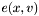

graphsup.icc File Reference
(Revision: 3512)
Go to the source code of this file.
Namespaces | |
| namespace | Gecode |
| namespace | Gecode::Int |
| namespace | Gecode::Int::GCC |
Classes | |
| class | Gecode::Int::GCC::VVGNode |
| Base class for nodes in the variable-value-graph. More... | |
| class | Gecode::Int::GCC::VarNode |
| Variable Node More... | |
| class | Gecode::Int::GCC::ValNode |
| Value node. More... | |
| class | Gecode::Int::GCC::Edge |
| Class for edges  in the variable-value-graph. More... | |
| class | Gecode::Int::GCC::VarValGraph< View, Card, isView > |
| Variable-value-graph used during propagation. More... | |
Enumerations | |
| enum | Gecode::Int::GCC::BC { Gecode::Int::GCC::UBC = 1, Gecode::Int::GCC::LBC = 0 } |
| Bounds constraint (BC) type. More... | |
Functions | |
| std::ostream & | Gecode::Int::GCC::operator<< (std::ostream &os, VarNode *v) |
| Debugging: print a variable node. | |
| std::ostream & | Gecode::Int::GCC::operator<< (std::ostream &os, ValNode *v) |
| Debugging: print a value node. | |
| std::ostream & | Gecode::Int::GCC::operator<< (std::ostream &os, Edge *e) |
| Debugging: print an edge. | |